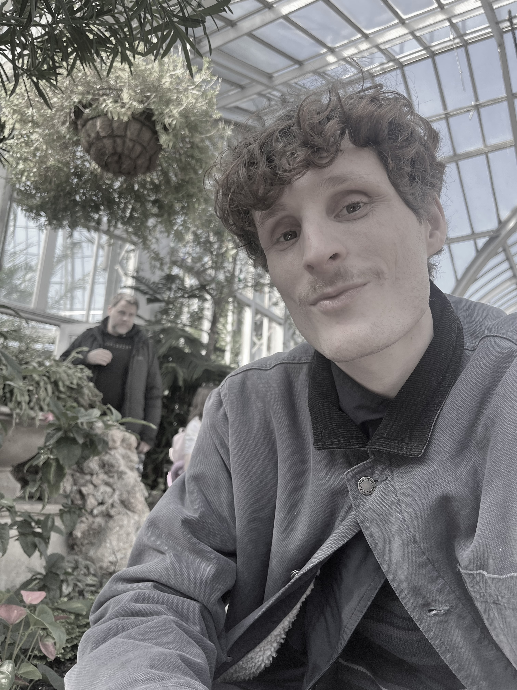

◆ research ◆ data ◆ theory
A recent masters of science graduate in The School of Information at the University of Michigan where I studied Libraries, Archives, and Knowledge Environments in Society with concentration in programming and data analysis.
I graduated undergrad at The University of Michigan with a degree in english literature. I have kept heavy interest in the literary and the poetic, especially as jumping off points into thinking through how data and computational methods shape contemporary culture. My interests in this space involves new media and visual culture studies, web histories, cultural AI, digital theory, memory, time, and media aesthetics.
My research at the moment is broadly motivated and underpinned by questions about the nature of information, the production of knowledge, and how those two sites may bump up against the archive, but more specifically, how machine learning practices will affect epistemic outputs, particularly from the standpoint of research and repository services, but also education more broadly.Recent
| April 2026 | Presented work on the ontological and taxonomic Development of metadata within The National Neighborhood Data Archives (NaNDA), which is available here. |
| April 2026 | Newer Report detailing short-term and long-term preservation stretegies for The Detroit Future Cities Archive. |
| April 2026 | The Negative Library of Other Networks: Permacomputing & The Cozy Web systematizes web archiving workflows from the perpective of permacomputing and low-tech methodologies. For more details visit the projects page. |
| April 2026 | Improving NaNDA's Discoverability Selected for a Democracy and Civic Empowerment award at the University of Michigan School of Information (UMSI) Student Project Exposition. |
Selected Writings
-
ChatGPT in the English Language Arts ClassroomA paper that seeks to interogate AI's educational and pedagogical potential, 2024 [DRAFT][INCOMPLETE]The project seeks to trace the origins of ChatGPT, and therefore to a minimal extent, Artificial Intelligence, with the goal of mapping its historical migrations onto the developing territories of automated or augmented deep learning systems. These systems encompass and enforce the trajectory of the tool and its use in an educational setting
-
Artificial Intelligence, Ethical Collapse, and the Future of LearningThis project attempts to interrogate how the child may interact with AI-mediated social and technical variation.Beyond critiquing and challenging the DOE report (2023), this project attempts to explore the co-constitutive relationship between the technical and social realms in greater detail (Introna, 2007), building out and expanding possibilities away from static academic practice and programmable instruction to interrogate how the child may interact with AI-mediated variation to determine what is true, credible, and real in a technologically advanced, post-truth, postmodern, post-reality society.
-
Individual Reflective Essay: DigitizationThis reflection investigates how medium might represent reality, and how libraries and archives face up to the digital.Working from this viewpoint of mutual conditioning, the shared mediation of the analog and the digital, this reflection builds on scholarship that foregrounds the best practices for digital imaging and the digitization of Audiovisual (AV) material in order to investigate how a medium might represent reality.